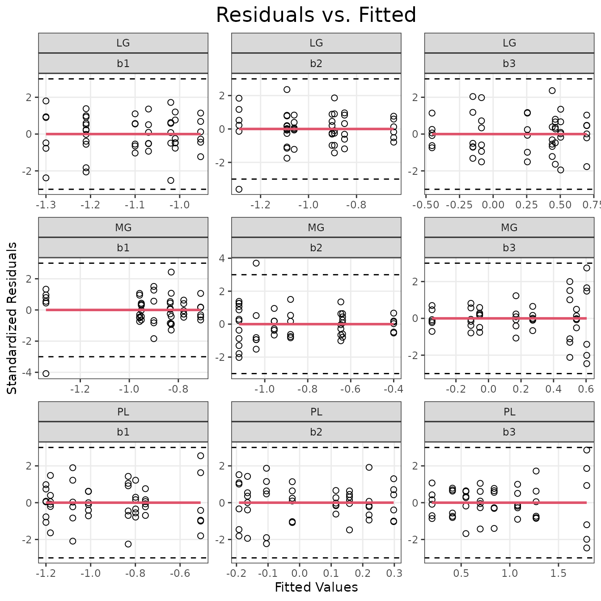

vignettes/FIBER_COUNT_STATS.Rmd
FIBER_COUNT_STATS.Rmd
# Required packages
library(MotrpacRatTrainingPhysiologyData)
library(compositions)
library(dplyr)
library(tidyr)
library(purrr)
library(tibble)
library(ggplot2)
library(emmeans)
# base plot theme
theme_set(theme_bw() + theme(panel.grid.minor = element_blank()))
x <- FIBER_TYPES %>%
# Relevel fiber types for ilr later
mutate(type = factor(type, levels = rev(levels(type)))) %>%
arrange(type) %>%
nest(data = c(everything(), -muscle), .by = muscle) %>%
deframe() %>%
map(.f = function(xi) {
xi %>%
# total fiber count is only included for illustrative purposes. It is not
# necessary
pivot_wider(id_cols = c(pid, age, sex, group, total_fiber_count),
names_from = type,
names_prefix = "t",
values_from = fiber_count) %>%
as.data.frame() %>%
`rownames<-`(.$pid)
})
# x is a named list of data.frames - one per muscle
map(x, ~ head(.x))
#> $LG
#> pid age sex group total_fiber_count tIIb tIIx tIIa tI
#> 10043799 10043799 6M Female SED 8356 4905 2165 613 673
#> 10044337 10044337 6M Female SED 7016 3290 2375 776 575
#> 10044922 10044922 6M Female SED 8217 4186 2238 1019 774
#> 10045813 10045813 6M Female SED 7495 3883 1997 741 874
#> 10046038 10046038 6M Female SED 7970 4212 2377 832 549
#> 10046380 10046380 6M Female SED 6701 3993 1706 732 270
#>
#> $MG
#> pid age sex group total_fiber_count tIIb tIIx tIIa tI
#> 10043799 10043799 6M Female SED 5461 2613 1506 573 769
#> 10044337 10044337 6M Female SED 5789 2767 1648 694 680
#> 10044922 10044922 6M Female SED 5632 2442 1794 827 569
#> 10045813 10045813 6M Female SED 5596 3046 1414 585 551
#> 10046038 10046038 6M Female SED 5974 2558 2056 744 616
#> 10046380 10046380 6M Female SED 7167 3627 2029 711 800
#>
#> $PL
#> pid age sex group total_fiber_count tIIb tIIx tIIa tI
#> 10043799 10043799 6M Female SED 1667 515 565 441 146
#> 10044337 10044337 6M Female SED 1152 405 426 258 63
#> 10044922 10044922 6M Female SED 2021 522 678 595 226
#> 10045813 10045813 6M Female SED 2080 535 798 576 171
#> 10046038 10046038 6M Female SED 2175 612 849 557 157
#> 10046380 10046380 6M Female SED 2014 449 798 514 253
#>
#> $SOL
#> pid age sex group total_fiber_count tIIa tI
#> 10043799 10043799 6M Female SED 1954 100 1854
#> 10044337 10044337 6M Female SED 1810 122 1688
#> 10044922 10044922 6M Female SED 1708 272 1436
#> 10045813 10045813 6M Female SED 1810 192 1618
#> 10046038 10046038 6M Female SED 1699 89 1610
#> 10046380 10046380 6M Female SED 1849 132 1717We will look at the first 6 rows of the fiber count matrix for each muscle. The fiber counts are elements of the positive orthant \(\mathbb{P}^4\) (LG, MG, PL) or \(\mathbb{P}^2\) (SOL). The orthant is “the analogue in n-dimensional Euclidean space of a quadrant in the plane or an octant in three dimensions. In two dimensions, there are four orthants (called quadrants)” (Wikipedia - Orthant).
Y <- map(x, .f = function(yi) {
yi %>%
dplyr::select(starts_with("tI")) %>%
as.matrix()
})
map(Y, head)
#> $LG
#> tIIb tIIx tIIa tI
#> 10043799 4905 2165 613 673
#> 10044337 3290 2375 776 575
#> 10044922 4186 2238 1019 774
#> 10045813 3883 1997 741 874
#> 10046038 4212 2377 832 549
#> 10046380 3993 1706 732 270
#>
#> $MG
#> tIIb tIIx tIIa tI
#> 10043799 2613 1506 573 769
#> 10044337 2767 1648 694 680
#> 10044922 2442 1794 827 569
#> 10045813 3046 1414 585 551
#> 10046038 2558 2056 744 616
#> 10046380 3627 2029 711 800
#>
#> $PL
#> tIIb tIIx tIIa tI
#> 10043799 515 565 441 146
#> 10044337 405 426 258 63
#> 10044922 522 678 595 226
#> 10045813 535 798 576 171
#> 10046038 612 849 557 157
#> 10046380 449 798 514 253
#>
#> $SOL
#> tIIa tI
#> 10043799 100 1854
#> 10044337 122 1688
#> 10044922 272 1436
#> 10045813 192 1618
#> 10046038 89 1610
#> 10046380 132 1717If we close the compositions (scale the fiber counts in each row so
they sum to 1, rather than their total fiber count), we end up with
fiber type proportions. These are elements of the positive simplex \(\mathbb{S}^4\) (LG, MG, PL) or \(\mathbb{S}^2\) (SOL). Note that this
closure operation is not required by the transformation in the next code
chunk. These proportions are just for investigative purposes. We will
use the compositions::clo function.
Y_clo <- map(Y, clo) # close the compositions (convert to proportions)
map(Y_clo, ~ round(head(.x), digits = 3))
#> $LG
#> tIIb tIIx tIIa tI
#> 10043799 0.587 0.259 0.073 0.081
#> 10044337 0.469 0.339 0.111 0.082
#> 10044922 0.509 0.272 0.124 0.094
#> 10045813 0.518 0.266 0.099 0.117
#> 10046038 0.528 0.298 0.104 0.069
#> 10046380 0.596 0.255 0.109 0.040
#>
#> $MG
#> tIIb tIIx tIIa tI
#> 10043799 0.478 0.276 0.105 0.141
#> 10044337 0.478 0.285 0.120 0.117
#> 10044922 0.434 0.319 0.147 0.101
#> 10045813 0.544 0.253 0.105 0.098
#> 10046038 0.428 0.344 0.125 0.103
#> 10046380 0.506 0.283 0.099 0.112
#>
#> $PL
#> tIIb tIIx tIIa tI
#> 10043799 0.309 0.339 0.265 0.088
#> 10044337 0.352 0.370 0.224 0.055
#> 10044922 0.258 0.335 0.294 0.112
#> 10045813 0.257 0.384 0.277 0.082
#> 10046038 0.281 0.390 0.256 0.072
#> 10046380 0.223 0.396 0.255 0.126
#>
#> $SOL
#> tIIa tI
#> 10043799 0.051 0.949
#> 10044337 0.067 0.933
#> 10044922 0.159 0.841
#> 10045813 0.106 0.894
#> 10046038 0.052 0.948
#> 10046380 0.071 0.929Now, we use the compositions::ilr function to perform
the isometric log-ratio (ilr) transformation and convert the proportions
to elements in \(\mathbb{R}^3\) (LG,
MG, PL) or \(\mathbb{R}\) (SOL)
according to the sequential binary partition (SBP) {I ||| IIa || IIx |
IIb}. That is, we can represent the data in 3-dimensional real space or
as values on the real number line. These coordinates are called
balances, which are defined as “the natural logarithm of the ratio of
geometric means of the parts in each group, normalised by a coefficient
to guarantee unit length of the vectors of the basis”[3].
The following balances are generated
where \(g(\cdot)\) is the geometric mean (the \(n\)th root of the product of \(n\) values). This is also referred to as the “center” of the group of fiber types.
Y_ilr <- map(Y_clo, function(y) {
nc <- ncol(y)
# Reverse the columns of the basis V to create the above SBPs
V <- ilrBase(D = nc)[, (nc - 1):1]
y_ilr <- ilr(y, V = V)
# Remove the "rmult" class, or rstandard will not work for SOL
class(y_ilr) <- NULL
y_ilr <- as.matrix(y_ilr)
return(y_ilr)
})
# List of matrices containing ilr-transformed coordinates
map(Y_ilr, ~ round(head(.x), digits = 3))
#> $LG
#> [,1] [,2] [,3]
#> 10043799 -0.884 -1.364 -0.578
#> 10044337 -1.000 -1.046 -0.230
#> 10044922 -0.873 -0.898 -0.443
#> 10045813 -0.621 -1.081 -0.470
#> 10046038 -1.131 -1.091 -0.405
#> 10046380 -1.598 -1.038 -0.601
#>
#> $MG
#> [,1] [,2] [,3]
#> 10043799 -0.462 -1.014 -0.390
#> 10044337 -0.667 -0.918 -0.366
#> 10044922 -0.860 -0.758 -0.218
#> 10045813 -0.783 -1.034 -0.543
#> 10046038 -0.813 -0.919 -0.154
#> 10046380 -0.671 -1.093 -0.411
#>
#> $PL
#> [,1] [,2] [,3]
#> 10043799 -1.074 -0.164 0.066
#> 10044337 -1.496 -0.389 0.036
#> 10044922 -0.838 0.000 0.185
#> 10045813 -1.125 -0.103 0.283
#> 10046038 -1.246 -0.211 0.231
#> 10046380 -0.702 -0.124 0.407
#>
#> $SOL
#> [,1]
#> 10043799 2.065
#> 10044337 1.858
#> 10044922 1.176
#> 10045813 1.507
#> 10046038 2.047
#> 10046380 1.814Now that we have multivariate Normal data, we can use multivariate multiple regression. Here, each response is a column of the matrices shown above. We will include categorical predictors age, sex, group, and their interactions to start.
# Multivariate multiple regression models for each muscle
fit.count <- map2(.x = x, .y = Y_ilr, .f = function(x, y) {
lm(y ~ age * sex * group, data = x)
})
# map(fit.count, summary) # lm model summary for each ilr column and muscleFor each model, we have measurements from 48 animals (6 biological replicates per group). We lose 1 degree of freedom to estimate the intercept (mean of SED 6M Female group), 3 degrees of freedom to estimate each of the main effects, another 3 to estimate the 2-way interactions, and 1 to estimate the 3-way interaction. Therefore, we have 48 - 8 = 40 residual degrees of freedom.
We will check the model diagnostic plots. First, we will check for homoscedasticity.
We will first look at boxplots of the standardized residuals to check
for Normality of the residuals for each response (fiber type). We are
using an rstandard.mlm method from https://stackoverflow.com/a/39768104 included in this
package to calculate the standardized residuals.
Since I prefer the ggplot2 package to base plotting, we
will transform the data to a longer format and then stack the data for
all four muscles.
# Standardized residuals and fitted values
resid_list <- map(fit.count[1:3], rstandard.mlm)
fitted_list <- map(fit.count[1:3], fitted)
# Prepare data for plotting
plot_df <- list("resid" = resid_list,
"fitted" = fitted_list) %>%
list_transpose() %>%
map(.f = function(.x) {
map(names(.x), .f = function(name_i) {
.x[[name_i]] %>%
as.data.frame() %>%
rownames_to_column("pid") %>%
pivot_longer(cols = -pid,
names_to = "balance",
values_to = name_i)
}) %>%
purrr::reduce(.f = left_join, by = c("pid", "balance")) %>%
mutate(across(.cols = c(fitted, resid),
.f = ~ signif(as.numeric(.x), 3)))
}) %>%
enframe(name = "muscle") %>%
unnest(value) %>%
mutate(balance = sub("V", "b", balance),
balance = ifelse(!grepl("b", balance), "b1", balance))
# Plot residuals vs. fitted for each muscle and fiber type
ggplot(plot_df, aes(x = fitted, y = resid)) +
geom_point(shape = 21, size = 2) +
stat_smooth(method = "loess", formula = y ~ x,
method.args = list(degree = 2),
se = FALSE, col = 2) +
# Empirical rule: ~99.7% of data should be within 3 SD of the mean
geom_hline(yintercept = c(-3, +3), lty = "dashed") +
facet_wrap(~ muscle + balance, scales = "free", ncol = 3) +
labs(x = "Fitted Values", y = "Standardized Residuals",
title = "Residuals vs. Fitted") +
theme(plot.title = element_text(hjust = 0.5, size = rel(1.6)))
There is an outlier in the MG \(b1\) panel, and the MG \(b3\) panel seems to display non-constant variance of the residuals. We will check the scale-location plots.
# Plot scale vs. location plot for each muscle and fiber type
ggplot(plot_df, aes(x = fitted, y = sqrt(abs(resid)))) +
geom_point(shape = 21, size = 2) +
stat_smooth(method = "loess", formula = y ~ x,
method.args = list(degree = 2),
se = TRUE, col = 2) +
facet_wrap(~ muscle + balance, scales = "free", ncol = 3) +
labs(x = "Fitted", y = "sqrt(|Standardized Residuals|)",
title = "Scale-Location") +
coord_cartesian(ylim = c(0, NA), expand = 5e-3) +
theme(plot.title = element_text(hjust = 0.5, size = rel(1.6)))There is increasing variance in the \(b3\) panels of the MG and PL. Keep in mind that there are only 6 samples per group.
We will check the Normality of the residuals with Q-Q plots.
ggplot(plot_df, aes(sample = resid)) +
geom_qq(shape = 21, size = 2) +
geom_qq_line(lty = 2, col = 2, linewidth = 1) +
facet_wrap(~ muscle + balance, scales = "free", ncol = 3) +
labs(x = "Theoretical Quantiles", y = "Sample Quantiles",
title = "Normal Q-Q Plot")There are a few outliers, though they should not affect the results too much. We will continue with hypothesis testing.
## Estimated marginal means
FIBER_COUNT_EMM <- map(fit.count, function(mod_i) {
by <- c("age", "sex")
mult.name <- NULL
if ("mlm" %in% class(mod_i)) {
mult.name <- "balance"
by <- c(by, mult.name)
}
emmeans(object = mod_i, specs = "group", by = by,
mult.name = mult.name, infer = TRUE)
})The values in the emmean column are the estimated
marginal means of the ilr coordinates (balances) for each sequential
binary partition (SBP):
The P-values are testing whether the means of the groups are different from 0, which is not of interest, in this case. We want to know if there are differences between the 8W and SED groups.
model_df <- fit.count %>%
map_chr(.f = ~ paste(deparse(.x[["call"]]), collapse = "")) %>%
enframe(name = "muscle", value = "model") %>%
mutate(model = gsub("(?<=[\\s])\\s*|^\\s+|\\s+$", "", model, perl = TRUE),
model_type = "mlm",
formula = sub(".*formula = ([^,]+),.*", "\\1", model),
formula = sub("y", "ilr(cbind(tI, tIIa, tIIx, tIIb))", formula)) %>%
select(-model)
FIBER_COUNT_MVT <- map(FIBER_COUNT_EMM, function(emm_i) {
if ("balance" %in% colnames(attr(emm_i, "grid"))) {
out <- mvcontrast(object = emm_i, method = "trt.vs.ctrl",
mult.name = "balance")
} else {
out <- contrast(object = emm_i, method = "trt.vs.ctrl")
}
out %>%
as.data.frame()
}) %>%
enframe(name = "muscle") %>%
unnest(value) %>%
group_by(age, sex) %>%
mutate(p.adj = p.adjust(p.value, method = "holm"),
signif = p.adj < 0.05) %>%
ungroup() %>%
pivot_longer(cols = c(T.square, estimate),
names_to = "estimate_type",
values_to = "estimate",
values_drop_na = TRUE) %>%
pivot_longer(cols = contains(".ratio"),
names_to = "statistic_type",
values_to = "statistic",
values_drop_na = TRUE) %>%
pivot_longer(cols = c(df, df2),
names_to = NULL,
values_to = "df2",
values_drop_na = TRUE) %>%
mutate(statistic_type = sub("\\.ratio", "", statistic_type),
estimate_type = ifelse(estimate_type == "estimate",
"difference of means", estimate_type),
response = "Fiber Count") %>%
left_join(model_df, by = "muscle") %>%
dplyr::select(response, age, sex, muscle, contrast, estimate_type, estimate,
SE, statistic_type, statistic, df1, df2, p.value, p.adj,
signif, everything()) %>%
mutate(muscle = factor(muscle, levels = c("LG", "MG", "PL", "SOL"))) %>%
arrange(age, sex, muscle) %>%
as.data.frame()We will proceed with specific comparisons of the subcompositions.
## Trained vs. SED comparisons by age, sex, muscle, and fiber type
FIBER_COUNT_STATS <- map(FIBER_COUNT_EMM, function(emm_i) {
contrast(object = emm_i, method = "trt.vs.ctrl", infer = TRUE) %>%
as.data.frame()
}) %>%
enframe(name = "muscle") %>%
unnest(value) %>%
group_by(age, sex, muscle) %>%
mutate(p.adj = p.adjust(p.value, method = "holm")) %>%
ungroup() %>%
pivot_longer(cols = estimate,
names_to = "estimate_type",
values_to = "estimate",
values_drop_na = TRUE) %>%
pivot_longer(cols = contains(".ratio"),
names_to = "statistic_type",
values_to = "statistic",
values_drop_na = TRUE) %>%
mutate(statistic_type = sub("\\.ratio", "", statistic_type),
estimate_type = ifelse(estimate_type == "estimate",
"difference of means", estimate_type),
signif = p.adj < 0.05,
muscle = factor(muscle, levels = c("LG", "MG", "PL", "SOL")),
response = "Fiber Count",
balance = ifelse(is.na(balance), 1, balance)) %>%
left_join(model_df, by = "muscle") %>%
dplyr::select(response, age, sex, muscle, balance, contrast, estimate_type,
estimate, SE, lower.CL, upper.CL, statistic_type, statistic, df,
p.value, p.adj, everything()) %>%
mutate(muscle = factor(muscle, levels = c("LG", "MG", "PL", "SOL"))) %>%
arrange(age, sex, muscle, balance) %>%
as.data.frame()
sessionInfo()
#> R version 4.3.1 (2023-06-16)
#> Platform: x86_64-pc-linux-gnu (64-bit)
#> Running under: Ubuntu 22.04.3 LTS
#>
#> Matrix products: default
#> BLAS: /usr/lib/x86_64-linux-gnu/openblas-pthread/libblas.so.3
#> LAPACK: /usr/lib/x86_64-linux-gnu/openblas-pthread/libopenblasp-r0.3.20.so; LAPACK version 3.10.0
#>
#> locale:
#> [1] LC_CTYPE=C.UTF-8 LC_NUMERIC=C LC_TIME=C.UTF-8
#> [4] LC_COLLATE=C.UTF-8 LC_MONETARY=C.UTF-8 LC_MESSAGES=C.UTF-8
#> [7] LC_PAPER=C.UTF-8 LC_NAME=C LC_ADDRESS=C
#> [10] LC_TELEPHONE=C LC_MEASUREMENT=C.UTF-8 LC_IDENTIFICATION=C
#>
#> time zone: UTC
#> tzcode source: system (glibc)
#>
#> attached base packages:
#> [1] stats graphics grDevices utils datasets methods base
#>
#> other attached packages:
#> [1] emmeans_1.8.9
#> [2] ggplot2_3.4.4
#> [3] tibble_3.2.1
#> [4] purrr_1.0.2
#> [5] tidyr_1.3.0
#> [6] dplyr_1.1.3
#> [7] compositions_2.0-6
#> [8] MotrpacRatTrainingPhysiologyData_0.1.0
#>
#> loaded via a namespace (and not attached):
#> [1] gtable_0.3.4 beeswarm_0.4.0 tensorA_0.36.2 xfun_0.40
#> [5] bslib_0.5.1 rstatix_0.7.2 lattice_0.21-8 vctrs_0.6.4
#> [9] tools_4.3.1 generics_0.1.3 fansi_1.0.5 DEoptimR_1.1-3
#> [13] pkgconfig_2.0.3 Matrix_1.6-1.1 desc_1.4.2 lifecycle_1.0.3
#> [17] farver_2.1.1 compiler_4.3.1 stringr_1.5.0 textshaping_0.3.7
#> [21] munsell_0.5.0 carData_3.0-5 vipor_0.4.5 htmltools_0.5.6.1
#> [25] sass_0.4.7 yaml_2.3.7 pillar_1.9.0 pkgdown_2.0.7
#> [29] car_3.1-2 ggpubr_0.6.0 jquerylib_0.1.4 MASS_7.3-60
#> [33] cachem_1.0.8 abind_1.4-5 nlme_3.1-162 robustbase_0.99-0
#> [37] tidyselect_1.2.0 digest_0.6.33 mvtnorm_1.2-3 stringi_1.7.12
#> [41] labeling_0.4.3 splines_4.3.1 rprojroot_2.0.3 fastmap_1.1.1
#> [45] grid_4.3.1 colorspace_2.1-0 cli_3.6.1 magrittr_2.0.3
#> [49] utf8_1.2.4 broom_1.0.5 withr_2.5.1 scales_1.2.1
#> [53] backports_1.4.1 ggbeeswarm_0.7.2 estimability_1.4.1 rmarkdown_2.25
#> [57] ggsignif_0.6.4 ragg_1.2.6 memoise_2.0.1 evaluate_0.22
#> [61] knitr_1.44 mgcv_1.8-42 rlang_1.1.1 Rcpp_1.0.11
#> [65] glue_1.6.2 bayesm_3.1-6 jsonlite_1.8.7 R6_2.5.1
#> [69] systemfonts_1.0.5 fs_1.6.3